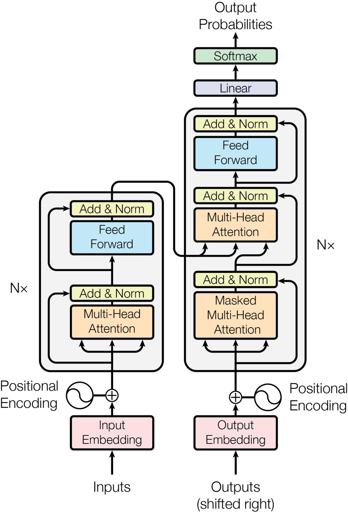
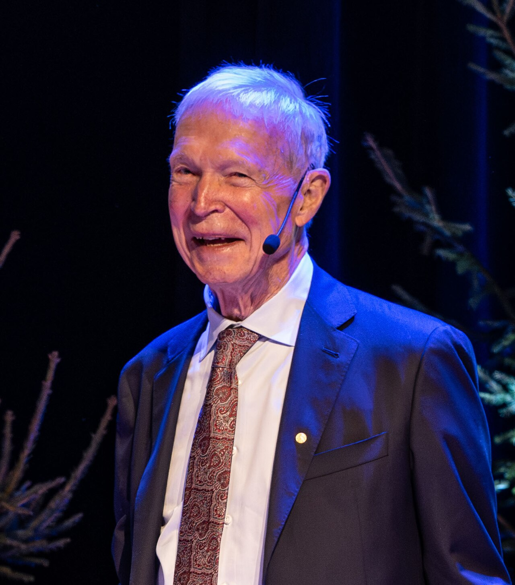
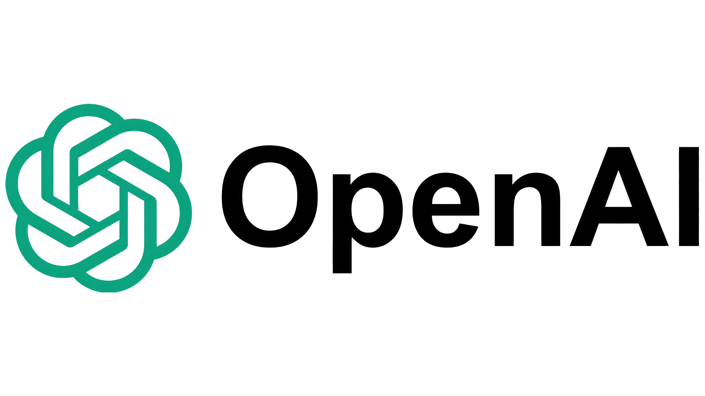
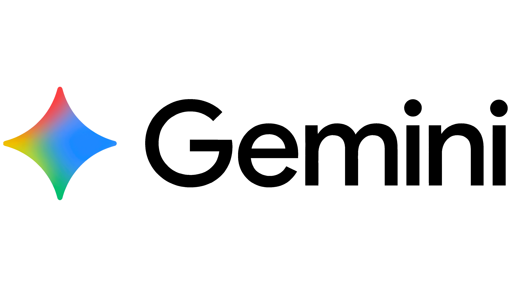
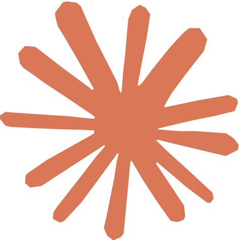
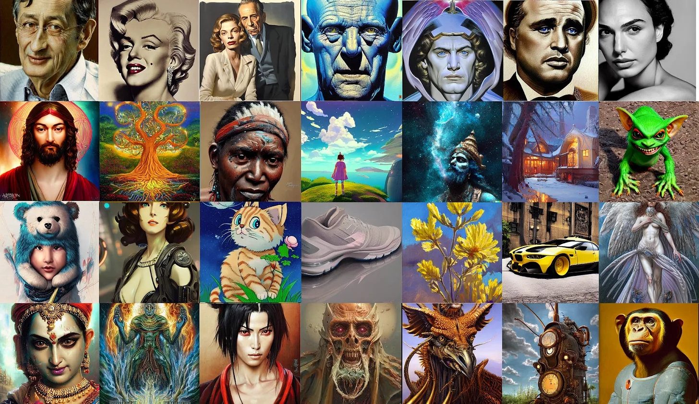
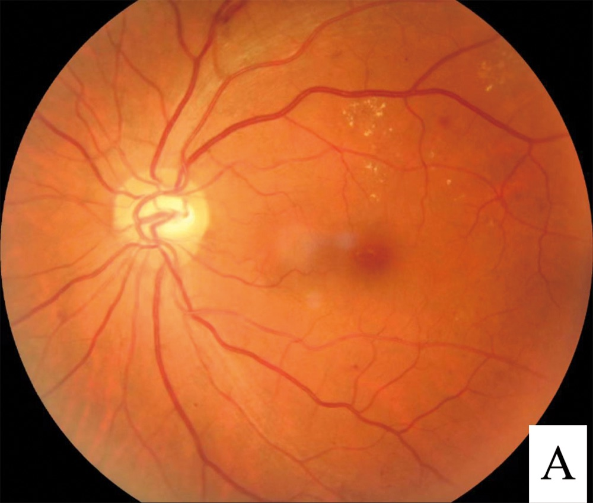
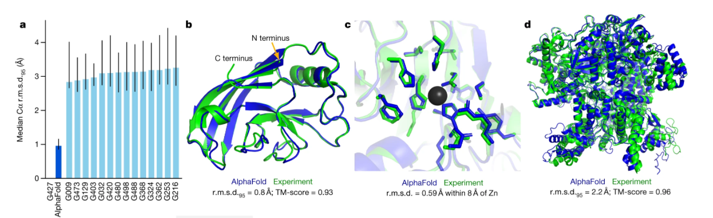
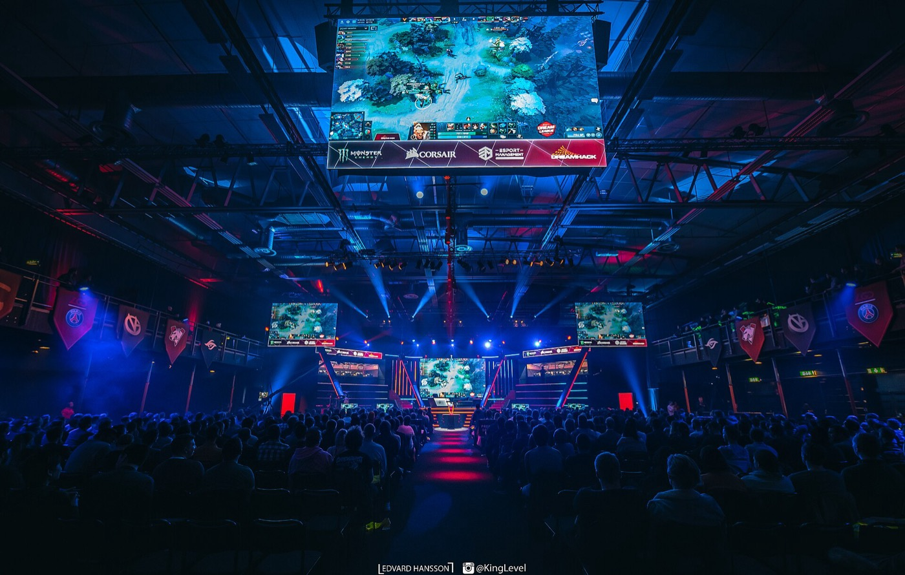
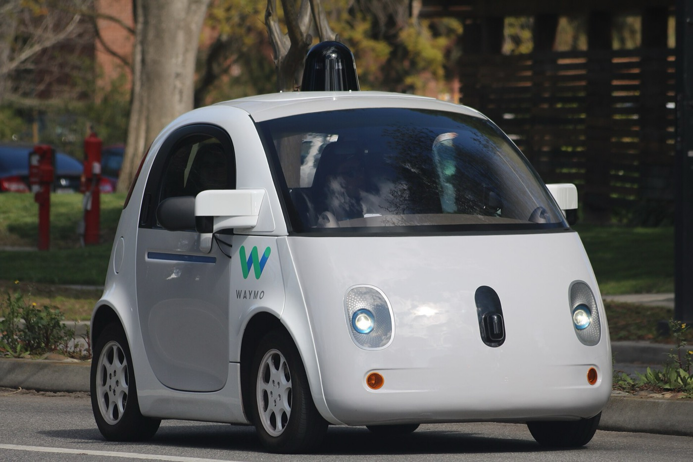

The Melon Benchmark
AI là gì?
(Cứ trả lời theo cảm nhận đầu tiên — chưa có câu nào sai cả.)
Mỗi vòng nằm trọn trong vòng trước — DL là tập con của ML, ML là tập con của AI.
Ví dụ đơn giản nhất có thể: hồi quy tuyến tính — vẽ một đường qua dữ liệu, rồi dùng nó để dự đoán.
Các chấm là ví dụ đã có trong quá khứ; đường đỏ là thứ mô hình học được. Đầu vào mới → dóng lên đường → ra dự đoán.
Rất nhiều đơn vị đơn giản (“nơ-ron”), xếp thành từng lớp, lớp này đưa tín hiệu vào lớp kia.
“Sâu” đơn giản là có nhiều lớp ẩn xếp chồng giữa đầu vào và đầu ra.
Từ bài báo gốc năm 2017 “Attention Is All You Need” — kiến trúc đứng sau ChatGPT và hầu hết các mô hình ngôn ngữ hiện đại.

Giải Nobel Vật lý 2024 — trao cho John Hopfield và Geoffrey Hinton.
“cho những khám phá và phát minh nền tảng giúp máy học được bằng mạng nơ-ron nhân tạo”
Lần đầu tiên giải Vật lý ghi nhận loại công trình này.

Mỗi mũi tên là một nam châm tí hon (“spin”) có thể hướng lên hoặc hướng xuống. Tương tác với hàng xóm kéo một số cặp về cùng chiều và đẩy số khác ngược chiều — cả lưới ổn định ở một trong rất nhiều sắp xếp khả dĩ. Phát hiện của Hopfield: hãy coi mỗi sắp xếp như một ký ức được lưu lại.
Nó tự tìm ra các quy luật ẩn trong dữ liệu — ví dụ tự học được “cạnh” hay “hình khối” trong ảnh mà không ai phải chỉ. Năm 2006, Hinton xếp chồng các RBM để tiền huấn luyện mạng sâu — một bước ngoặt góp phần châm ngòi cho làn sóng học sâu.
Bạn nghĩ những mô hình này thực sự hoạt động ra sao?
Lấy Stable Diffusion làm ví dụ: mô hình bắt đầu từ nhiễu ngẫu nhiên (nhiễu Gauss), rồi dựa vào câu lệnh của bạn để khử dần nhiễu đó, từng bước một, cho đến khi một bức ảnh hiện ra.
Câu lệnh dẫn hướng từng bước khử nhiễu, chứ không chỉ tác động vào kết quả cuối.
Chủ yếu xây trên kiến trúc Transformer.



Chủ yếu xây trên mô hình Diffusion, thường kết hợp với thành phần ViT (Vision Transformer).

Các hướng đi trước như GAN và VAE đã mở đường, nhưng diffusion gần như đã chiếm lĩnh — ở đây không đi sâu vào chúng.

Đây là ảnh chụp đáy mắt — nhìn xuyên qua đồng tử vào võng mạc phía sau. Những đốm vàng nhạt rải rác ở phía trên bên phải là tổn thương do tiểu đường gây ra; đó chính là thứ AI được huấn luyện để phát hiện.
Ảnh đáy mắt: Hao et al., CC BY 4.0, qua Wikimedia Commons.

Trái: sai số của AlphaFold (cột đậm) so với 15 nhóm dẫn đầu. Phải: cấu trúc AlphaFold dự đoán (xanh dương) chồng gần như khít lên cấu trúc đo bằng thực nghiệm (xanh lá).
Hình: Jumper et al., Nature 2021, CC BY-SA 4.0, qua Wikimedia Commons.


Ảnh: Edvard Hansson (Dota 2, CC BY-SA 4.0) · Grendelkhan (Waymo, CC BY-SA 4.0), qua Wikimedia Commons.
Bạn có nghĩ AI cứ thế thông minh dần lên mãi không?
Điều gì ở AI khiến bạn lo ngại, nếu có?
Có câu hỏi nào tới đây không? Chúng ta sẽ bàn thêm vài điều nữa — kể cả “AI có thể hủy diệt chúng ta không?” và cách ra lệnh cho AI sao cho hiệu quả — ở phần Hỏi & Đáp.
Câu hỏi từ khán giả: “có đúng là dùng AI nhiều sẽ làm cạn kiệt tài nguyên nước hay không?”
Có — vì vài lý do rất cụ thể:
Nó có thể đưa ra vài lời khuyên — nhưng không nên là nguồn hỗ trợ tinh thần duy nhất của bạn.